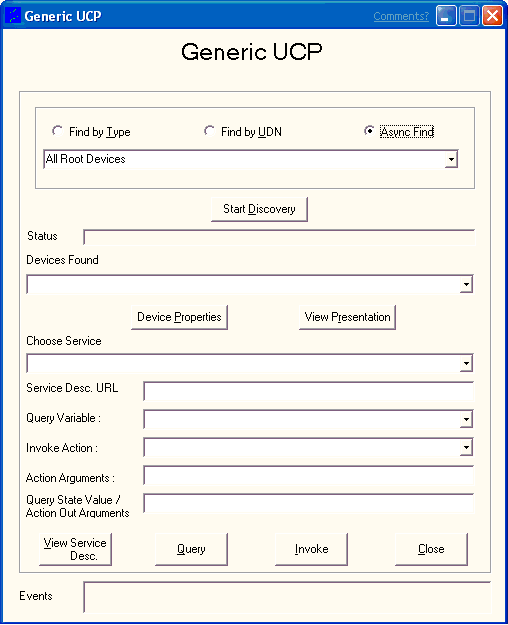

The generic user control point (UCP) application allows you to discover devices, control those discovered devices, and view the related eventing information, all using a graphical interface.
To start the generic UCP application
Create and configure the samples\netds\upnp\GenericUCP\CPP\devtype.txt file (or the \VisualBasic\devtype.txt file) with device information. This file allows you to configure the generic UCP for the "find by type" and "async find" searches. Each line of the file must contain a device type and the related description. For example:
upnp:rootdevice All Root Devices
urn:schemas-upnp-org:device:mediaplayer:1 Media Player
This example is for a fictitious media player device. The "Media Player" at the end of the second line is not a part of the device type, it is for informational purposes in the Generic UCP application. The same applies to "All Root Devices" in the first line.
Add a line that contains your specific device type and description for each device.
Create and configure the samples\netds\upnp\GenericUCP\CPP\udn.txt file (or the \VisualBasic\udn.txt file) with UDN information for your devices. This file allows you to configure the generic UCP for the "find by UDN" search. Each line uses the following form:
uuid:{7d50b574-4213-4b88-84d9-e5c9241fcb3a}
Add a line that contains your specific UDN for each device.
Run GenericUCP.exe. The Generic UCP window appears.

[!Note]
The View Presentation and View Service Desc. functionality is not implemented in the C++ sample code.
Â
Â
Â